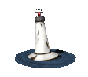

+
+
+
+
+
+
+
+
live authentically at all costs
 YOUR BRAIN IS IN DEBT
- Lore
- Every cycle leaves a new kind of wreckage not just financial, but mental. Brain Debt was born from the overleveraged thoughts of traders who kept buying "the dip" until their cognition defaulted. Now the market operates on borrowed neurons. Ideas are collateral. Sanity is a token. The collective trench mind runs a deficit it can't repay — but still trades like it can. Some call it madness. We call it Brain Debt. Because the only way out is to think less and press more.
- szn of dumb
- We've overtraded dopamine, overleveraged focus, and defaulted on reason. Welcome to Brain Debt. The only currency left is delusion and we're printing it daily.
About Brain Debt
Brain Debt represents the cognitive deficit accumulated when we overtrade our mental resources in pursuit of market gains. It's the psychological toll of constantly chasing alpha in volatile markets.
When your brain is in debt, every decision carries interest. The more you borrow from your future self to make present trades, the deeper the cognitive deficit grows.
This isn't just about financial leverage - it's about mental leverage. How much focus can you borrow? How much sanity can you collateralize? Brain Debt is the currency of the overtraded mind.